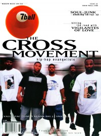

CMnexus: Contemporary Christian culture, music, and media.
|
|
The Cross MovementOn the cover|  | November 2000
7ball | Media coverage:Albums & reviews:1997: Heaven's Mentality1998: House of Representatives2000: Human Emergency2003: Holy Culture2004: Holy Culture Live [video]2005: Higher Definition2006: Chronicles: Greatest Hits Vol. 12007: HIStory: Our Place in His Story Award Summary (Nominations / Wins)Dove Awards2000 Dove Awards2004 Dove Awards- Rap/Hip Hop Album: Holy Culture
2005 Dove Awards- Rap/Hip Hop Album: Higher Definition
- Rap/Hip Hop Recorded Song: "Lord You Are"
Grammy Awards2007 Grammy Awards- Best Rock or Rap Gospel Album: HIStory: Our Place in His Story
Books about The Cross Movement- "The Cross Movement" in The Encyclopedia of Contemporary Christian Music (Mark Allan Powell, 2002)
|